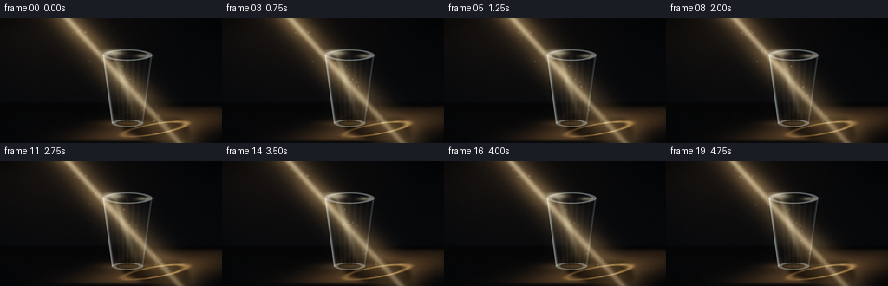
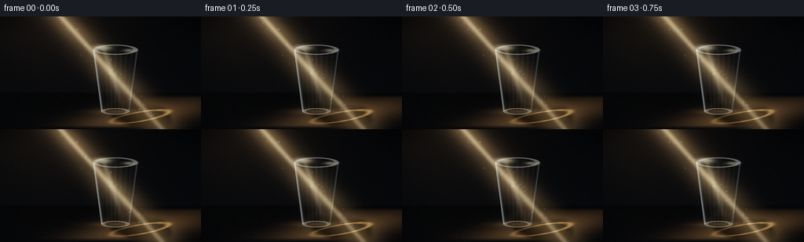
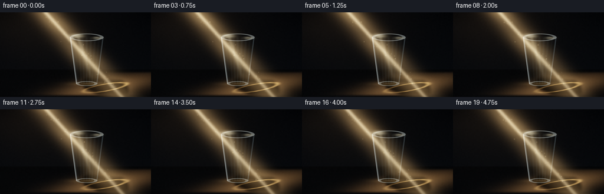
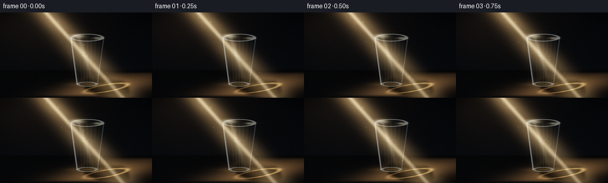
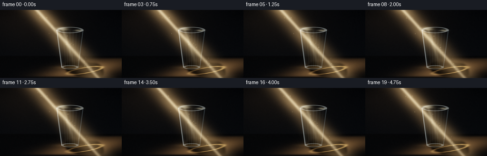
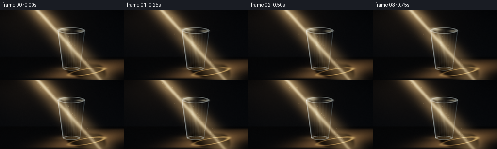
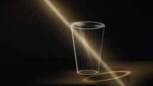
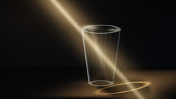
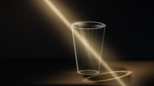

CODING AGENTS AS PIXEL WORLD MODELS
traex/DeepSeek-V4.1-Flash · phygen_044
点击播放 · 原生 RGB 像素
逐轮保存的候选
回放视频、检查图与代码变化。
每份候选均可单独播放。实际图片检查记录在下方工具轨迹中。
候选 01播放与检查图
点击播放 · 原生 RGB 像素


展开代码变化
--- 上一保存版本 +++ 本次保存版本 @@ -0,0 +1,260 @@ +from pathlib import Path + +import numpy as np +from PIL import Image, ImageFilter + +import artifact_io + + +CASE_DIR = Path(__file__).resolve().parent +WIDTH = 256 +HEIGHT = 144 +FRAMES = 20 +FPS = 4.0 +SS = 4 +W = WIDTH * SS +H = HEIGHT * SS + + +def smoothstep(edge0, edge1, value): + t = np.clip((value - edge0) / (edge1 - edge0), 0.0, 1.0) + return t * t * (3.0 - 2.0 * t) + + +def blur(mask, radius): + image = Image.fromarray(np.clip(mask * 255.0, 0, 255).astype(np.uint8)) + image = image.filter(ImageFilter.GaussianBlur(max(0.01, radius * SS))) + return np.asarray(image, dtype=np.float32) / 255.0 + + +def blend(base, color, alpha): + color = np.asarray(color, dtype=np.float32) + return base * (1.0 - alpha[..., None]) + color * alpha[..., None] + + +def add_light(base, color, amount): + return base + np.asarray(color, dtype=np.float32) * amount[..., None] + + +def ellipse_mask(x, y, cx, cy, rx, ry, softness=0.7): + q = np.sqrt(((x - cx) / rx) ** 2 + ((y - cy) / ry) ** 2) + return 1.0 - smoothstep(1.0 - softness / max(rx, ry), 1.0 + softness / max(rx, ry), q) + + +def rotated_ellipse_coords(x, y, cx, cy, angle): + dx = x - cx + dy = y - cy + ca = np.cos(angle) + sa = np.sin(angle) + return dx * ca + dy * sa, -dx * sa + dy * ca + + +def local_gaussian(layer, px, py, radius, strength): + x0 = max(0, int(px - radius * 4)) + x1 = min(W, int(px + radius * 4) + 1) + y0 = max(0, int(py - radius * 4)) + y1 = min(H, int(py + radius * 4) + 1) + if x1 <= x0 or y1 <= y0: + return + yy, xx = np.mgrid[y0:y1, x0:x1] + spot = np.exp(-((xx - px) ** 2 + (yy - py) ** 2) / (2.0 * radius * radius)) + layer[y0:y1, x0:x1] += spot * strength + + +def render_frame(index): + phase = index / (FRAMES - 1) + theta = phase * 2.0 * np.pi + rng = np.random.default_rng(4100 + index) + + yy, xx = np.mgrid[0:H, 0:W] + x = (xx + 0.5) / SS + y = (yy + 0.5) / SS + + # Dark studio wall and shallow tabletop. + wall_t = np.clip(y / 102.0, 0.0, 1.0) + wall = np.stack( + [ + 0.010 + 0.008 * wall_t, + 0.014 + 0.010 * wall_t, + 0.021 + 0.012 * wall_t, + ], + axis=-1, + ) + ambient = np.exp(-(((x - 112.0) / 105.0) ** 2 + ((y - 30.0) / 92.0) ** 2)) + wall = add_light(wall, [0.055, 0.040, 0.024], ambient * 0.28) + + floor_t = np.clip((y - 96.0) / 48.0, 0.0, 1.0) + floor = np.stack( + [ + 0.012 + 0.009 * floor_t, + 0.014 + 0.010 * floor_t, + 0.017 + 0.012 * floor_t, + ], + axis=-1, + ) + floor_alpha = smoothstep(95.3, 99.2, y) + scene = wall * (1.0 - floor_alpha[..., None]) + floor * floor_alpha[..., None] + + # A warm pool of light on the table, elongated along the incoming ray. + ex, ey = rotated_ellipse_coords(x, y, 178.0, 128.0, -0.17) + floor_pool = np.exp(-0.5 * ((ex / 55.0) ** 2 + (ey / 11.0) ** 2)) + floor_pool *= smoothstep(99.0, 105.0, y) * (1.0 - smoothstep(138.0, 144.0, y)) + scene = add_light(scene, [0.72, 0.47, 0.24], floor_pool * 0.48) + + # Cast shadow: a soft, elongated silhouette on the illuminated floor. + sx0, sy0 = 151.0, 121.0 + sx1, sy1 = 199.0, 134.0 + vx, vy = sx1 - sx0, sy1 - sy0 + segment_t = np.clip(((x - sx0) * vx + (y - sy0) * vy) / (vx * vx + vy * vy), 0.0, 1.0) + nearest_x = sx0 + segment_t * vx + nearest_y = sy0 + segment_t * vy + distance = np.sqrt((x - nearest_x) ** 2 + (y - nearest_y) ** 2) + shadow_width = 11.0 + 8.0 * segment_t + shadow = 1.0 - smoothstep(shadow_width - 1.8, shadow_width + 3.0, distance) + shadow *= floor_alpha * (1.0 - smoothstep(138.5, 144.0, y)) + shadow = blur(shadow, 2.1) + contact = ellipse_mask(x, y, 151.0, 121.2, 19.5, 5.0, 1.3) + contact = blur(contact * floor_alpha, 1.5) + shadow = np.clip(np.maximum(shadow, contact * 0.88), 0.0, 1.0) + scene *= 1.0 - 0.78 * shadow[..., None] + + # Refracted caustic along the shadow edge makes the transparent cup legible. + q_shadow = np.sqrt((ex / 45.0) ** 2 + (ey / 7.2) ** 2) + caustic_band = np.exp(-0.5 * ((q_shadow - 0.82) / 0.075) ** 2) + caustic_band *= smoothstep(105.0, 113.0, y) * (1.0 - smoothstep(137.0, 142.0, y)) + caustic_band *= 0.40 + 0.60 * smoothstep(153.0, 193.0, x) + shimmer = 0.88 + 0.12 * np.sin(x * 0.48 + y * 0.30 + theta) + scene = add_light(scene, [1.0, 0.69, 0.33], caustic_band * shimmer * 0.62) + + # Main volumetric light shaft. It crosses the cup from upper left to lower right. + shaft_shift = 1.35 * np.sin(theta - 0.7) + line_x = 78.0 + 0.90 * y + shaft_shift + perpendicular = np.abs(x - line_x) / np.sqrt(1.0 + 0.90**2) + shaft_width = 8.5 + 0.023 * y + shaft_outer = np.exp(-0.5 * (perpendicular / shaft_width) ** 2) + shaft_core = np.exp(-0.5 * (perpendicular / 2.25) ** 2) + along_fade = (1.0 - 0.42 * smoothstep(12.0, 145.0, y)) + volumetric = shaft_outer * along_fade * (0.84 + 0.16 * np.sin(y * 0.10 + theta * 0.8)) + volumetric += 0.58 * shaft_core * along_fade + volumetric += 0.10 * np.exp(-0.5 * ((perpendicular - 17.0) / 10.0) ** 2) * along_fade + scene = add_light(scene, [0.92, 0.68, 0.39], volumetric * 0.43) + scene = add_light(scene, [1.0, 0.92, 0.74], shaft_core * along_fade * 0.31) + + # Geometry of the tapered plastic cup. + cup_cx = 147.0 + rim_y = 42.5 + base_y = 121.2 + top_rx = 28.5 + top_ry = 6.5 + base_rx = 18.0 + base_ry = 4.2 + body_t = np.clip((y - rim_y) / (base_y - rim_y), 0.0, 1.0) + half_width = top_rx + (base_rx - top_rx) * body_t + dx = np.abs(x - cup_cx) + body_edge = half_width - dx + body_mask = smoothstep(-0.7, 0.7, body_edge) + body_mask *= smoothstep(rim_y - 0.7, rim_y + 0.7, y) + body_mask *= 1.0 - smoothstep(base_y - 0.7, base_y + 0.7, y) + + rim_outer = ellipse_mask(x, y, cup_cx, rim_y, top_rx, top_ry, 1.0) + base_outer = ellipse_mask(x, y, cup_cx, base_y, base_rx, base_ry, 0.9) + cup_mask = np.clip(np.maximum(body_mask, np.maximum(rim_outer, base_outer)), 0.0, 1.0) + + # Shift the background inside the cup to suggest refraction through the walls. + refracted = np.roll(scene, shift=(-2 * SS, 0), axis=1) + refracted = np.roll(refracted, shift=(1 * SS, 0), axis=0) + glass_tint = np.array([0.78, 0.90, 0.94], dtype=np.float32) + glass_alpha = cup_mask * (0.115 + 0.040 * (1.0 - np.abs(np.clip((x - cup_cx) / np.maximum(half_width, 1.0), -1.0, 1.0)))) + scene = scene * (1.0 - glass_alpha[..., None]) + refracted * glass_tint * glass_alpha[..., None] + + # The transmitted beam is brighter and bends slightly within the plastic. + glass_u = np.clip((x - cup_cx) / np.maximum(half_width, 1.0), -1.0, 1.0) + bend = (1.1 * np.sin((y - rim_y) * 0.12) + 1.3 * glass_u) * body_mask + transmitted_dx = np.abs(x - (line_x + bend)) + transmitted = np.exp(-0.5 * (transmitted_dx / (6.5 + 1.2 * glass_u)) ** 2) + transmitted *= body_mask * (0.82 + 0.18 * np.sin(y * 0.21 + theta)) + scene = add_light(scene, [1.0, 0.78, 0.47], transmitted * 0.24) + + # Thin sidewalls, subtle vertical ribs, and the darker opening at the top. + left_boundary = cup_cx - half_width + right_boundary = cup_cx + half_width + left_edge = np.exp(-0.5 * ((x - left_boundary) / 1.35) ** 2) * body_mask + right_edge = np.exp(-0.5 * ((x - right_boundary) / 1.20) ** 2) * body_mask + rib_phase = (x - left_boundary) / np.maximum(2.0 * half_width, 1.0) + ribs = 0.5 + 0.5 * np.cos(rib_phase * np.pi * 16.0) + ribs *= body_mask * (0.35 + 0.65 * (1.0 - np.abs(2.0 * rib_phase - 1.0))) + + scene = add_light(scene, [0.86, 0.94, 0.95], left_edge * 0.56) + scene = add_light(scene, [0.70, 0.84, 0.90], right_edge * 0.20) + scene = add_light(scene, [0.64, 0.77, 0.82], ribs * 0.042) + scene *= 1.0 - 0.045 * (body_mask * (0.55 + 0.45 * rib_phase))[..., None] + + q_rim = np.sqrt(((x - cup_cx) / top_rx) ** 2 + ((y - rim_y) / top_ry) ** 2) + rim_band = smoothstep(0.73, 0.88, q_rim) * (1.0 - smoothstep(0.97, 1.04, q_rim)) + opening = 1.0 - smoothstep(0.76, 0.91, q_rim) + scene = blend(scene, [0.018, 0.026, 0.033], opening * 0.30) + scene = add_light(scene, [0.88, 0.94, 0.92], rim_band * 0.33) + + rim_glint = np.exp(-0.5 * (((x - (cup_cx - 17.0)) / 7.0) ** 2 + ((y - 40.0) / 2.2) ** 2)) + rim_glint += 0.55 * np.exp(-0.5 * (((x - (cup_cx + 18.0)) / 5.0) ** 2 + ((y - 43.5) / 1.4) ** 2)) + scene = add_light(scene, [1.0, 0.93, 0.72], rim_glint * 0.72) + + q_base = np.sqrt(((x - cup_cx) / base_rx) ** 2 + ((y - base_y) / base_ry) ** 2) + base_band = smoothstep(0.66, 0.82, q_base) * (1.0 - smoothstep(0.97, 1.05, q_base)) + scene = add_light(scene, [0.78, 0.86, 0.86], base_band * 0.31) + contact_glow = np.exp(-0.5 * (((x - 149.0) / 20.0) ** 2 + ((y - 121.6) / 2.3) ** 2)) + scene = add_light(scene, [1.0, 0.73, 0.39], contact_glow * 0.18) + + # A long specular streak from the beam crossing the front of the cup. + streak_x = cup_cx - 8.0 + 0.32 * (y - 62.0) + streak = np.exp(-0.5 * ((x - streak_x) / 2.4) ** 2) + streak *= np.exp(-0.5 * ((y - 66.0) / 22.0) ** 2) * body_mask + scene = add_light(scene, [1.0, 0.90, 0.67], streak * 0.25) + + # Floating dust catches the shaft. + dust = np.zeros((H, W), dtype=np.float32) + dust_rng = np.random.default_rng(811) + for particle in range(46): + y0 = dust_rng.uniform(8.0, 132.0) + offset = dust_rng.normal(0.0, 7.0) + speed = dust_rng.uniform(0.7, 2.2) + py = (y0 + speed * phase) * SS + base_x = 78.0 + 0.90 * (py / SS) + shaft_shift + px = (base_x + offset + 0.55 * np.sin(theta + particle * 1.7)) * SS + radius = dust_rng.uniform(0.24, 0.72) * SS + strength = dust_rng.uniform(0.12, 0.42) * (0.75 + 0.25 * np.sin(theta * 1.4 + particle)) + local_gaussian(dust, px, py, radius, strength) + dust = blur(dust, 0.35) + scene = add_light(scene, [1.0, 0.85, 0.58], dust * 0.75) + + # Gentle top-left atmosphere bloom. + bloom_center = np.exp(-0.5 * (((x - 45.0) / 60.0) ** 2 + ((y - 4.0) / 46.0) ** 2)) + scene = add_light(scene, [0.56, 0.39, 0.23], bloom_center * 0.075) + + # Filmic shoulder, vignette, and fine grain. + scene = 1.0 - np.exp(-scene * 1.34) + vignette = 1.0 - 0.30 * ( + smoothstep(0.46, 1.02, np.abs((x - WIDTH * 0.5) / (WIDTH * 0.5))) + * smoothstep(0.55, 1.10, np.abs((y - HEIGHT * 0.49) / (HEIGHT * 0.5))) + ) + scene *= vignette[..., None] + + low_noise = rng.normal(0.0, 1.0, (H // (2 * SS) + 1, W // (2 * SS) + 1)).astype(np.float32) + noise_img = Image.fromarray(np.clip(low_noise * 42.0 + 128.0, 0, 255).astype(np.uint8)) + noise_img = noise_img.resize((W, H), Image.Resampling.BICUBIC) + noise = (np.asarray(noise_img, dtype=np.float32) - 128.0) / 255.0 + scene = np.clip(scene + noise[..., None] * 0.011, 0.0, 1.0) + + image = Image.fromarray(np.clip(scene * 255.0, 0, 255).astype(np.uint8), "RGB") + image = image.resize((WIDTH, HEIGHT), Image.Resampling.LANCZOS) + image = image.filter(ImageFilter.UnsharpMask(radius=0.7, percent=34, threshold=2)) + return np.asarray(image, dtype=np.uint8) + + +def main(): + frames = np.stack([render_frame(index) for index in range(FRAMES)]) + artifact_io.save(frames, CASE_DIR) + + +if __name__ == "__main__": + main()
候选 02播放与检查图
点击播放 · 原生 RGB 像素


展开代码变化
--- 上一保存版本
+++ 本次保存版本
@@ -99,7 +99,7 @@
ex, ey = rotated_ellipse_coords(x, y, 178.0, 128.0, -0.17)
floor_pool = np.exp(-0.5 * ((ex / 55.0) ** 2 + (ey / 11.0) ** 2))
floor_pool *= smoothstep(99.0, 105.0, y) * (1.0 - smoothstep(138.0, 144.0, y))
- scene = add_light(scene, [0.72, 0.47, 0.24], floor_pool * 0.48)
+ scene = add_light(scene, [0.72, 0.47, 0.24], floor_pool * 0.72)
# Cast shadow: a soft, elongated silhouette on the illuminated floor.
sx0, sy0 = 151.0, 121.0
@@ -116,7 +116,7 @@
contact = ellipse_mask(x, y, 151.0, 121.2, 19.5, 5.0, 1.3)
contact = blur(contact * floor_alpha, 1.5)
shadow = np.clip(np.maximum(shadow, contact * 0.88), 0.0, 1.0)
- scene *= 1.0 - 0.78 * shadow[..., None]
+ scene *= 1.0 - 0.91 * shadow[..., None]
# Refracted caustic along the shadow edge makes the transparent cup legible.
q_shadow = np.sqrt((ex / 45.0) ** 2 + (ey / 7.2) ** 2)
@@ -124,21 +124,21 @@
caustic_band *= smoothstep(105.0, 113.0, y) * (1.0 - smoothstep(137.0, 142.0, y))
caustic_band *= 0.40 + 0.60 * smoothstep(153.0, 193.0, x)
shimmer = 0.88 + 0.12 * np.sin(x * 0.48 + y * 0.30 + theta)
- scene = add_light(scene, [1.0, 0.69, 0.33], caustic_band * shimmer * 0.62)
+ scene = add_light(scene, [1.0, 0.69, 0.33], caustic_band * shimmer * 0.78)
# Main volumetric light shaft. It crosses the cup from upper left to lower right.
shaft_shift = 1.35 * np.sin(theta - 0.7)
line_x = 78.0 + 0.90 * y + shaft_shift
perpendicular = np.abs(x - line_x) / np.sqrt(1.0 + 0.90**2)
- shaft_width = 8.5 + 0.023 * y
+ shaft_width = 9.6 + 0.025 * y
shaft_outer = np.exp(-0.5 * (perpendicular / shaft_width) ** 2)
shaft_core = np.exp(-0.5 * (perpendicular / 2.25) ** 2)
along_fade = (1.0 - 0.42 * smoothstep(12.0, 145.0, y))
volumetric = shaft_outer * along_fade * (0.84 + 0.16 * np.sin(y * 0.10 + theta * 0.8))
volumetric += 0.58 * shaft_core * along_fade
volumetric += 0.10 * np.exp(-0.5 * ((perpendicular - 17.0) / 10.0) ** 2) * along_fade
- scene = add_light(scene, [0.92, 0.68, 0.39], volumetric * 0.43)
- scene = add_light(scene, [1.0, 0.92, 0.74], shaft_core * along_fade * 0.31)
+ scene = add_light(scene, [0.92, 0.68, 0.39], volumetric * 0.66)
+ scene = add_light(scene, [1.0, 0.92, 0.74], shaft_core * along_fade * 0.43)
# Geometry of the tapered plastic cup.
cup_cx = 147.0
@@ -245,7 +245,7 @@
noise = (np.asarray(noise_img, dtype=np.float32) - 128.0) / 255.0
scene = np.clip(scene + noise[..., None] * 0.011, 0.0, 1.0)
- image = Image.fromarray(np.clip(scene * 255.0, 0, 255).astype(np.uint8), "RGB")
+ image = Image.fromarray(np.clip(scene * 255.0, 0, 255).astype(np.uint8))
image = image.resize((WIDTH, HEIGHT), Image.Resampling.LANCZOS)
image = image.filter(ImageFilter.UnsharpMask(radius=0.7, percent=34, threshold=2))
return np.asarray(image, dtype=np.uint8)
候选 03播放与检查图
点击播放 · 原生 RGB 像素


展开代码变化
--- 上一保存版本
+++ 本次保存版本
@@ -102,17 +102,22 @@
scene = add_light(scene, [0.72, 0.47, 0.24], floor_pool * 0.72)
# Cast shadow: a soft, elongated silhouette on the illuminated floor.
- sx0, sy0 = 151.0, 121.0
- sx1, sy1 = 199.0, 134.0
+ sx0, sy0 = 149.0, 120.8
+ sx1, sy1 = 197.0, 133.0
vx, vy = sx1 - sx0, sy1 - sy0
segment_t = np.clip(((x - sx0) * vx + (y - sy0) * vy) / (vx * vx + vy * vy), 0.0, 1.0)
nearest_x = sx0 + segment_t * vx
nearest_y = sy0 + segment_t * vy
distance = np.sqrt((x - nearest_x) ** 2 + (y - nearest_y) ** 2)
- shadow_width = 11.0 + 8.0 * segment_t
+ shadow_width = 12.5 + 8.5 * segment_t
shadow = 1.0 - smoothstep(shadow_width - 1.8, shadow_width + 3.0, distance)
+ shadow_rim_x, shadow_rim_y = rotated_ellipse_coords(x, y, 192.0, 132.6, -0.18)
+ shadow_rim = np.exp(-0.5 * ((shadow_rim_x / 15.0) ** 4 + (shadow_rim_y / 5.1) ** 4))
+ shadow_base_x, shadow_base_y = rotated_ellipse_coords(x, y, 150.0, 121.0, -0.08)
+ shadow_base = np.exp(-0.5 * ((shadow_base_x / 14.0) ** 4 + (shadow_base_y / 3.7) ** 4))
+ shadow = np.maximum(shadow, 0.86 * np.maximum(shadow_rim, shadow_base))
shadow *= floor_alpha * (1.0 - smoothstep(138.5, 144.0, y))
- shadow = blur(shadow, 2.1)
+ shadow = blur(shadow, 1.7)
contact = ellipse_mask(x, y, 151.0, 121.2, 19.5, 5.0, 1.3)
contact = blur(contact * floor_alpha, 1.5)
shadow = np.clip(np.maximum(shadow, contact * 0.88), 0.0, 1.0)
可观测工具轨迹
实际执行的命令与返回图片。
命令 1exit 0
/bin/bash -lc "pwd && rg --files -g '"'!*'"\\.git*' | sed -n '1,200p'"
命令 2exit 0
/bin/bash -lc "sed -n '1,240p' prompt.txt"
命令 3exit 0
/bin/bash -lc "sed -n '1,260p' GENERATION_RULES.md"
命令 4exit 0
/bin/bash -lc 'cat task_spec.json'
命令 5exit 0
/bin/bash -lc 'ls -la && find . -maxdepth 2 -type d -print | sort'
命令 6exit 0
/bin/bash -lc "sed -n '1,260p' artifact_io.py"
命令 7exit 0
/bin/bash -lc "sed -n '1,240p' player_template.html"
命令 8exit 0
/bin/bash -lc "python - <<'PY'
import numpy, PIL
print('numpy', numpy.__version__)
print('Pillow', PIL.__version__)
PY"命令 9exit 1
/bin/bash -lc 'python generate.py'
命令 10exit 0
/bin/bash -lc 'python generate.py'
命令 11exit 0
/bin/bash -lc "python - <<'PY'
from PIL import Image
import numpy as np
im=np.asarray(Image.open('frames/00.png')).astype(float)
print(im.min(),im.max(),im.mean(),np.percentile(im,[50,90,99]))
PY"命令 12exit 0
/bin/bash -lc 'python generate.py'
命令 13exit 0
/bin/bash -lc "python - <<'PY'
from PIL import Image
import numpy as np
from pathlib import Path
files=sorted(Path('frames').glob('*.png'))
a=np.stack([np.asarray(Image.open(p)).astype(np.int16) for p in files])
d=np.abs(np.diff(a,axis=0))
print('frames',len(files),'shape',a.shape,'range',a.min(),a.max())
print('mean adjacent abs diff',d.mean(),'p99',np.percentile(d,99),'max',d.max())
print('pixels changed per transition',np.mean((d.max(axis=-1)>0).mean(axis=(1,2))))
print('npz',Path('pixels.npz').stat().st_size,'html',Path('index.html').stat().st_size)
PY"命令 14exit 0
/bin/bash -lc 'python generate.py'
命令 15exit 0
/bin/bash -lc "python - <<'PY'
from pathlib import Path
import json
import numpy as np
from PIL import Image
spec=json.loads(Path('task_spec.json').read_text())
with np.load('pixels.npz') as data:
pixels=data['pixels']
expected=(spec['height'],spec['width'],spec['frames'])
assert pixels.shape == expected, (pixels.shape, expected)
assert pixels.dtype == np.uint32
frames=sorted(Path('frames').glob('*.png'))
assert len(frames)==spec['frames']
for p in frames:
im=Image.open(p)
assert im.size==(spec['width'],spec['height']) and im.mode=='RGB'
assert Path('index.html').is_file() and Path('generate.py').is_file()
print('validated:', spec['frames'], 'RGB frames at', f\"{spec['width']}x{spec['height']}\", f\"{spec['fps']} fps\")
print('pixels.npz:', pixels.shape, pixels.dtype)
print('index.html bytes:', Path('index.html').stat().st_size)
PY"视觉工具实际返回图片 1

视觉工具实际返回图片 2

视觉工具实际返回图片 3

视觉工具实际返回图片 4

视觉工具实际返回图片 5

视觉工具实际返回图片 6

视觉工具实际返回图片 7

保存候选 3 份；完成命令 15 次；可验证图片返回 7 张。原始 API 响应与完整日志保留在本地。